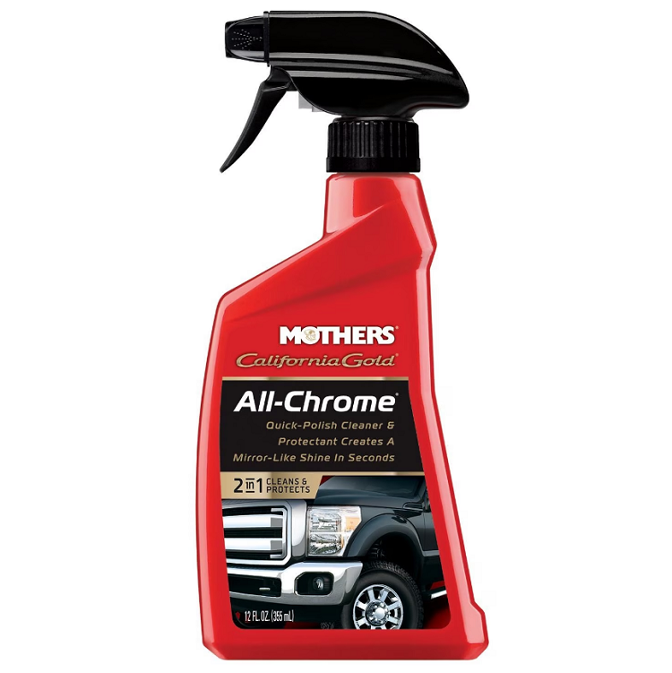
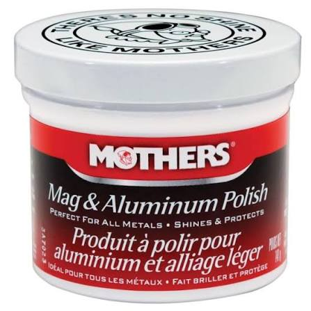
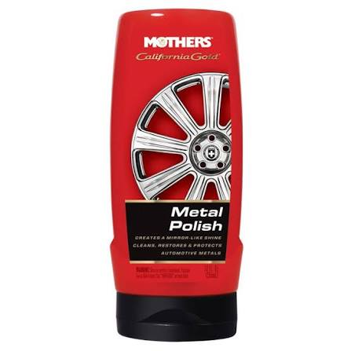
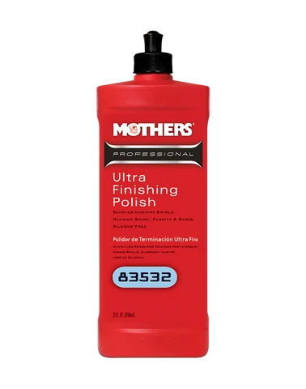
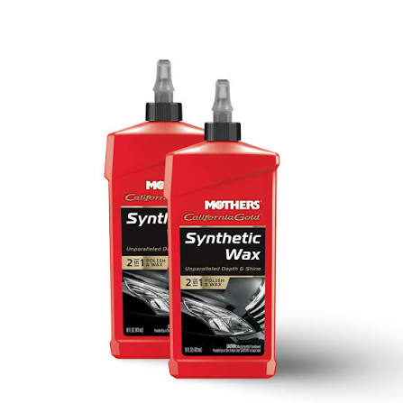

All Chrome Polish
$27
Mothers California Gold All-Chrome is a convenient spray-on formula designed to clean, polish, and protect automotive chrome surfaces in one easy step.

Mag And Aluminium Polish
$50
Mothers Mag & Aluminum Polish features a specialized balancing formula that delivers a brilliant, mirror-like shine while remaining easy to apply with a simple cloth and light buffing.

Metal Polish
$30
Mothers Metal Polish restores a brilliant, mirror-like shine to automotive metals while remaining easy to use.

Ultra finishing Polish
$60
Mothers Professional Ultra Finishing Polish is an advanced automotive polish engineered to remove fine machine swirls and maximize paint gloss.

Synthetic Wax
$40
Mothers California Gold Synthetic Wax provides a deep, wet-look gloss and chemical-bonding protection in an easy-on, easy-off formula.